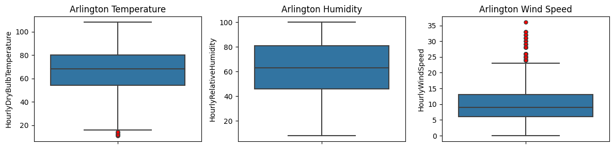
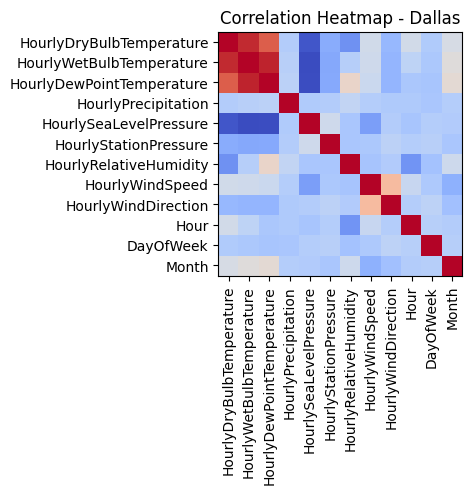
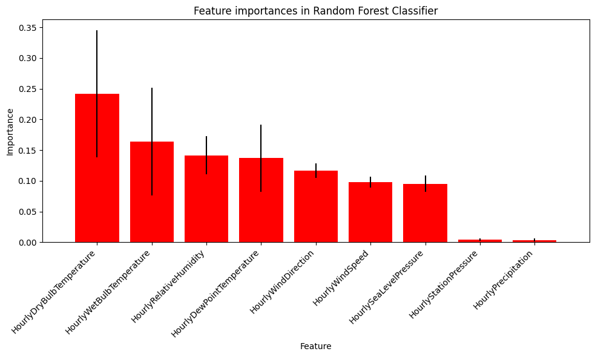
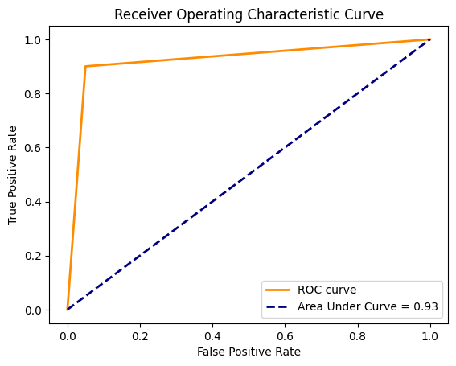

# Loading the Libraries
import pandas as pd
import numpy as np
from sklearn.impute import KNNImputer
from sklearn.preprocessing import LabelEncoder
from sklearn.model_selection import train_test_split
from sklearn.ensemble import RandomForestClassifier
from sklearn.ensemble import RandomForestRegressor
from sklearn.tree import DecisionTreeClassifier
from xgboost import XGBClassifier
from sklearn.ensemble import GradientBoostingClassifier
from sklearn.metrics import classification_report, confusion_matrix
import matplotlib.pyplot as plt
import seaborn as sns
import matplotlib.ticker as mtick
# Load the datasets from CSV files
dallas = pd.read_csv('https://raw.githubusercontent.com/INFO-523-Exercises/project-final-Byte-Busters/main/data/Dallas.csv', header='infer' ,low_memory=False)
arlington = pd.read_csv('https://raw.githubusercontent.com/INFO-523-Exercises/project-final-Byte-Busters/main/data/Arlington.csv', header='infer' ,low_memory=False)
denton = pd.read_csv('https://raw.githubusercontent.com/INFO-523-Exercises/project-final-Byte-Busters/main/data/Denton.csv', header='infer' ,low_memory=False)1. Problem Understanding and Definition:
Define the problem as understanding and classifying the intensity of UHI effects in Dallas, Arlington, and Denton. The goal is to analyze how urbanization affects local climate variables.
2. Data Collection and Import:
3. Data Preprocessing and Cleaning:
# Convert the 'Date' column to datetime format
arlington['DATE'] = pd.to_datetime(arlington['DATE'])
dallas['DATE'] = pd.to_datetime(dallas['DATE'])
denton['DATE'] = pd.to_datetime(denton['DATE'])
# Define the columns of interest
columns_of_interest = ['DATE','HourlyDryBulbTemperature', 'HourlyWetBulbTemperature', 'HourlyDewPointTemperature',
'HourlyPrecipitation', 'HourlySeaLevelPressure', 'HourlyStationPressure',
'HourlyRelativeHumidity', 'HourlyWindSpeed', 'HourlyWindDirection']
# Select only the columns of interest from each dataset
denton = denton[columns_of_interest]
dallas = dallas[columns_of_interest]
arlington = arlington[columns_of_interest]
# Recheck for missing values
print("Remaining Missing Values in Denton Dataset:\n", denton.isnull().sum())
print("\nRemaining Missing Values in Dallas Dataset:\n", dallas.isnull().sum())
print("\nRemaining Missing Values in Arlington Dataset:\n", arlington.isnull().sum())Remaining Missing Values in Denton Dataset:
DATE 0
HourlyDryBulbTemperature 385
HourlyWetBulbTemperature 516
HourlyDewPointTemperature 383
HourlyPrecipitation 1589
HourlySeaLevelPressure 2058
HourlyStationPressure 508
HourlyRelativeHumidity 385
HourlyWindSpeed 434
HourlyWindDirection 434
dtype: int64
Remaining Missing Values in Dallas Dataset:
DATE 0
HourlyDryBulbTemperature 384
HourlyWetBulbTemperature 478
HourlyDewPointTemperature 386
HourlyPrecipitation 1340
HourlySeaLevelPressure 1801
HourlyStationPressure 476
HourlyRelativeHumidity 386
HourlyWindSpeed 388
HourlyWindDirection 388
dtype: int64
Remaining Missing Values in Arlington Dataset:
DATE 0
HourlyDryBulbTemperature 397
HourlyWetBulbTemperature 548
HourlyDewPointTemperature 397
HourlyPrecipitation 1911
HourlySeaLevelPressure 2251
HourlyStationPressure 529
HourlyRelativeHumidity 397
HourlyWindSpeed 482
HourlyWindDirection 482
dtype: int64Decide on Imputation Strategy:
For numerical columns with missing values, consider mean or median imputation.
For categorical columns, consider mode imputation or assigning a new category like ‘Unknown’.
Step 1: Numerical Imputation
In this step, we will impute missing values in numerical columns using the KNN Imputation.
cols_to_impute = ['HourlyDryBulbTemperature','HourlyWetBulbTemperature','HourlyRelativeHumidity','HourlyDewPointTemperature','HourlyPrecipitation','HourlySeaLevelPressure','HourlyStationPressure','HourlyWindSpeed','HourlyWindDirection']
import pandas as pd
from sklearn.impute import KNNImputer
# Define columns for data type conversion and imputation
cols_to_convert = {
'dallas': ['HourlyDryBulbTemperature', 'HourlyDewPointTemperature', 'HourlyPrecipitation', 'HourlySeaLevelPressure', 'HourlyStationPressure', 'HourlyWindDirection'],
'arlington': ['HourlyDryBulbTemperature', 'HourlyWetBulbTemperature', 'HourlyDewPointTemperature', 'HourlyStationPressure', 'HourlyPrecipitation', 'HourlyWindSpeed', 'HourlySeaLevelPressure', 'HourlyWindDirection', 'HourlyRelativeHumidity'],
'denton': ['HourlyDryBulbTemperature', 'HourlyDewPointTemperature', 'HourlyStationPressure', 'HourlyPrecipitation', 'HourlyWindSpeed', 'HourlyWindDirection']
}
cols_to_impute = ['HourlyDryBulbTemperature', 'HourlyWetBulbTemperature', 'HourlyRelativeHumidity', 'HourlyDewPointTemperature', 'HourlyPrecipitation', 'HourlySeaLevelPressure', 'HourlyStationPressure', 'HourlyWindSpeed', 'HourlyWindDirection']# Function to process each city's dataset
def process_city_data(df, cols_convert, cols_impute, city_name):
# Convert columns to numeric, extracting the numeric part
for col in cols_convert:
if df[col].dtype == 'object':
df[col] = df[col].str.extract('(\d+)', expand=False).astype(float)
# Check and print missing values before imputation
for col in cols_impute:
missing_values = df[col].isnull().sum()
print(f"{city_name} - Missing values in {col} before imputation: {missing_values}")
# Initialize the KNN Imputer and apply KNN Imputation
imputer = KNNImputer(n_neighbors=5)
df[cols_impute] = imputer.fit_transform(df[cols_impute])
# Check and print missing values after imputation
for col in cols_impute:
missing_values = df[col].isnull().sum()
print(f"{city_name} - Missing values in {col} after imputation: {missing_values}")
# Display the head and describe of the dataset
print(f"{city_name} Dataset - First 5 rows:")
print(df.head())
print(f"\n{city_name} Dataset - Descriptive Statistics:")
print(df.describe())
return df
# Process each dataset and assign it back to the variable
dallas = process_city_data(dallas, cols_to_convert['dallas'], cols_to_impute, 'Dallas')
arlington = process_city_data(arlington, cols_to_convert['arlington'], cols_to_impute, 'Arlington')
denton = process_city_data(denton, cols_to_convert['denton'], cols_to_impute, 'Denton')Dallas - Missing values in HourlyDryBulbTemperature before imputation: 384
Dallas - Missing values in HourlyWetBulbTemperature before imputation: 478
Dallas - Missing values in HourlyRelativeHumidity before imputation: 386
Dallas - Missing values in HourlyDewPointTemperature before imputation: 386
Dallas - Missing values in HourlyPrecipitation before imputation: 1884
Dallas - Missing values in HourlySeaLevelPressure before imputation: 1801
Dallas - Missing values in HourlyStationPressure before imputation: 476
Dallas - Missing values in HourlyWindSpeed before imputation: 388
Dallas - Missing values in HourlyWindDirection before imputation: 1090
Dallas - Missing values in HourlyDryBulbTemperature after imputation: 0
Dallas - Missing values in HourlyWetBulbTemperature after imputation: 0
Dallas - Missing values in HourlyRelativeHumidity after imputation: 0
Dallas - Missing values in HourlyDewPointTemperature after imputation: 0
Dallas - Missing values in HourlyPrecipitation after imputation: 0
Dallas - Missing values in HourlySeaLevelPressure after imputation: 0
Dallas - Missing values in HourlyStationPressure after imputation: 0
Dallas - Missing values in HourlyWindSpeed after imputation: 0
Dallas - Missing values in HourlyWindDirection after imputation: 0
Dallas Dataset - First 5 rows:
DATE HourlyDryBulbTemperature HourlyWetBulbTemperature \
0 2022-01-01 00:53:00 65.0 64.0
1 2022-01-01 01:53:00 65.0 64.0
2 2022-01-01 02:53:00 64.0 63.0
3 2022-01-01 03:53:00 64.0 62.0
4 2022-01-01 04:53:00 63.0 61.0
HourlyDewPointTemperature HourlyPrecipitation HourlySeaLevelPressure \
0 63.0 0.0 29.0
1 63.0 0.0 29.0
2 63.0 0.0 29.0
3 61.0 0.0 29.0
4 59.0 0.0 29.0
HourlyStationPressure HourlyRelativeHumidity HourlyWindSpeed \
0 29.0 93.0 9.0
1 29.0 93.0 6.0
2 29.0 96.0 0.0
3 29.0 90.0 3.0
4 29.0 87.0 5.0
HourlyWindDirection
0 320.0
1 360.0
2 0.0
3 80.0
4 110.0
Dallas Dataset - Descriptive Statistics:
HourlyDryBulbTemperature HourlyWetBulbTemperature \
count 10536.000000 10536.000000
mean 67.197414 58.333991
std 18.608601 15.293785
min 11.000000 8.000000
25% 55.000000 48.000000
50% 68.000000 61.000000
75% 81.000000 72.000000
max 107.000000 81.000000
HourlyDewPointTemperature HourlyPrecipitation HourlySeaLevelPressure \
count 10536.000000 10536.000000 10536.000000
mean 51.414822 0.001489 29.453747
std 17.581486 0.033942 0.470971
min 0.000000 0.000000 29.000000
25% 38.000000 0.000000 29.000000
50% 56.000000 0.000000 29.200000
75% 66.000000 0.000000 30.000000
max 76.000000 1.000000 30.000000
HourlyStationPressure HourlyRelativeHumidity HourlyWindSpeed \
count 10536.000000 10536.000000 10536.000000
mean 29.009181 61.355909 8.742737
std 0.127099 21.295024 5.102282
min 28.000000 12.000000 0.000000
25% 29.000000 45.000000 6.000000
50% 29.000000 61.352512 8.000000
75% 29.000000 78.000000 11.000000
max 30.000000 100.000000 36.000000
HourlyWindDirection
count 10536.000000
mean 164.009625
std 97.066256
min 0.000000
25% 110.000000
50% 160.000000
75% 200.000000
max 360.000000
Arlington - Missing values in HourlyDryBulbTemperature before imputation: 398
Arlington - Missing values in HourlyWetBulbTemperature before imputation: 549
Arlington - Missing values in HourlyRelativeHumidity before imputation: 398
Arlington - Missing values in HourlyDewPointTemperature before imputation: 398
Arlington - Missing values in HourlyPrecipitation before imputation: 2410
Arlington - Missing values in HourlySeaLevelPressure before imputation: 2251
Arlington - Missing values in HourlyStationPressure before imputation: 529
Arlington - Missing values in HourlyWindSpeed before imputation: 482
Arlington - Missing values in HourlyWindDirection before imputation: 836
Arlington - Missing values in HourlyDryBulbTemperature after imputation: 0
Arlington - Missing values in HourlyWetBulbTemperature after imputation: 0
Arlington - Missing values in HourlyRelativeHumidity after imputation: 0
Arlington - Missing values in HourlyDewPointTemperature after imputation: 0
Arlington - Missing values in HourlyPrecipitation after imputation: 0
Arlington - Missing values in HourlySeaLevelPressure after imputation: 0
Arlington - Missing values in HourlyStationPressure after imputation: 0
Arlington - Missing values in HourlyWindSpeed after imputation: 0
Arlington - Missing values in HourlyWindDirection after imputation: 0
Arlington Dataset - First 5 rows:
DATE HourlyDryBulbTemperature HourlyWetBulbTemperature \
0 2022-01-01 00:18:00 67.0 66.0
1 2022-01-01 00:27:00 67.0 66.0
2 2022-01-01 00:53:00 66.0 64.0
3 2022-01-01 01:53:00 65.0 64.0
4 2022-01-01 02:53:00 65.0 64.0
HourlyDewPointTemperature HourlyPrecipitation HourlySeaLevelPressure \
0 65.0 0.0 29.0
1 65.0 0.0 29.0
2 63.0 0.0 29.0
3 63.0 0.0 29.0
4 63.0 0.0 29.0
HourlyStationPressure HourlyRelativeHumidity HourlyWindSpeed \
0 28.0 93.0 8.0
1 28.0 93.0 8.0
2 28.0 90.0 6.0
3 28.0 93.0 3.0
4 28.0 93.0 3.0
HourlyWindDirection
0 290.0
1 270.0
2 310.0
3 330.0
4 310.0
Arlington Dataset - Descriptive Statistics:
HourlyDryBulbTemperature HourlyWetBulbTemperature \
count 10938.000000 10938.000000
mean 66.799237 58.075903
std 18.621383 15.162909
min 11.000000 8.000000
25% 54.250000 48.000000
50% 68.000000 61.000000
75% 80.000000 72.000000
max 108.000000 79.000000
HourlyDewPointTemperature HourlyPrecipitation HourlySeaLevelPressure \
count 10938.000000 10938.000000 10938.000000
mean 51.249222 0.001719 29.441497
std 17.430900 0.040534 0.465324
min 0.000000 0.000000 29.000000
25% 39.000000 0.000000 29.000000
50% 56.000000 0.000000 29.200000
75% 66.000000 0.000000 30.000000
max 77.000000 1.000000 30.000000
HourlyStationPressure HourlyRelativeHumidity HourlyWindSpeed \
count 10938.000000 10938.000000 10938.000000
mean 28.971671 62.252016 9.088201
std 0.170122 21.772457 5.689781
min 28.000000 8.000000 0.000000
25% 29.000000 46.000000 6.000000
50% 29.000000 63.000000 9.000000
75% 29.000000 81.000000 13.000000
max 30.000000 100.000000 36.000000
HourlyWindDirection
count 10938.000000
mean 161.875966
std 102.341655
min 0.000000
25% 110.000000
50% 160.000000
75% 200.000000
max 360.000000
Denton - Missing values in HourlyDryBulbTemperature before imputation: 385
Denton - Missing values in HourlyWetBulbTemperature before imputation: 516
Denton - Missing values in HourlyRelativeHumidity before imputation: 385
Denton - Missing values in HourlyDewPointTemperature before imputation: 383
Denton - Missing values in HourlyPrecipitation before imputation: 2059
Denton - Missing values in HourlySeaLevelPressure before imputation: 2058
Denton - Missing values in HourlyStationPressure before imputation: 508
Denton - Missing values in HourlyWindSpeed before imputation: 434
Denton - Missing values in HourlyWindDirection before imputation: 693
Denton - Missing values in HourlyDryBulbTemperature after imputation: 0
Denton - Missing values in HourlyWetBulbTemperature after imputation: 0
Denton - Missing values in HourlyRelativeHumidity after imputation: 0
Denton - Missing values in HourlyDewPointTemperature after imputation: 0
Denton - Missing values in HourlyPrecipitation after imputation: 0
Denton - Missing values in HourlySeaLevelPressure after imputation: 0
Denton - Missing values in HourlyStationPressure after imputation: 0
Denton - Missing values in HourlyWindSpeed after imputation: 0
Denton - Missing values in HourlyWindDirection after imputation: 0
Denton Dataset - First 5 rows:
DATE HourlyDryBulbTemperature HourlyWetBulbTemperature \
0 2022-01-01 00:18:00 63.0 61.0
1 2022-01-01 00:53:00 62.0 60.0
2 2022-01-01 01:53:00 62.0 61.0
3 2022-01-01 02:53:00 61.0 60.0
4 2022-01-01 03:53:00 61.0 60.0
HourlyDewPointTemperature HourlyPrecipitation HourlySeaLevelPressure \
0 60.0 0.0 29.852
1 59.0 0.0 29.640
2 60.0 0.0 29.610
3 60.0 0.0 29.610
4 60.0 0.0 29.610
HourlyStationPressure HourlyRelativeHumidity HourlyWindSpeed \
0 28.0 90.0 5.0
1 28.0 90.0 0.0
2 28.0 93.0 0.0
3 28.0 97.0 0.0
4 28.0 97.0 0.0
HourlyWindDirection
0 350.0
1 0.0
2 0.0
3 0.0
4 0.0
Denton Dataset - Descriptive Statistics:
HourlyDryBulbTemperature HourlyWetBulbTemperature \
count 10808.000000 10808.000000
mean 65.053764 56.960310
std 19.644345 15.936749
min 10.000000 7.000000
25% 52.000000 46.000000
50% 66.000000 60.000000
75% 80.000000 71.000000
max 110.000000 80.000000
HourlyDewPointTemperature HourlyPrecipitation HourlySeaLevelPressure \
count 10808.000000 10808.000000 10808.000000
mean 50.681699 0.000230 30.005838
std 17.623262 0.013871 0.202828
min 0.000000 0.000000 29.370000
25% 37.000000 0.000000 29.880000
50% 55.000000 0.000000 29.980000
75% 66.000000 0.000000 30.110000
max 76.000000 1.000000 30.820000
HourlyStationPressure HourlyRelativeHumidity HourlyWindSpeed \
count 10808.000000 10808.000000 10808.000000
mean 28.967564 64.737678 9.472105
std 0.181262 22.355446 6.077904
min 28.000000 12.000000 0.000000
25% 29.000000 47.000000 6.000000
50% 29.000000 65.000000 9.000000
75% 29.000000 83.000000 14.000000
max 30.000000 100.000000 37.000000
HourlyWindDirection
count 10808.000000
mean 164.818284
std 107.662173
min 0.000000
25% 100.000000
50% 160.000000
75% 210.000000
max 360.000000 4. EDA: Exploratory Data Analysis
1. Summary Statistics:
Lets Start by generating summary statistics for key variables like temperature, humidity, and wind speed. This will give a basic understanding of the data distribution in each city.
def extract_time_features(df):
df['Hour'] = df['DATE'].dt.hour
df['Time'] = df['DATE'].dt.strftime('%H:%M:%S')
df['Date'] = df['DATE'].dt.date
df['DayOfWeek'] = df['DATE'].dt.dayofweek
df['Month'] = df['DATE'].dt.month
df['Season'] = df['Month'].apply(lambda x: (x%12 + 3)//3)
seasons = {1: 'Winter', 2: 'Spring', 3: 'Summer', 4: 'Fall'}
df['Season'] = df['Season'].map(seasons)
# Apply the time feature extraction to each dataset
extract_time_features(arlington)
extract_time_features(dallas)
extract_time_features(denton)
# Summary statistics for key variables
summary_denton = denton.describe()
summary_dallas = dallas.describe()
summary_arlington = arlington.describe()
# Display the summary statistics
print("Summary Statistics for Denton:\n", summary_denton)
print("\nSummary Statistics for Dallas:\n", summary_dallas)
print("\nSummary Statistics for Arlington:\n", summary_arlington)Summary Statistics for Denton:
HourlyDryBulbTemperature HourlyWetBulbTemperature \
count 10808.000000 10808.000000
mean 65.053764 56.960310
std 19.644345 15.936749
min 10.000000 7.000000
25% 52.000000 46.000000
50% 66.000000 60.000000
75% 80.000000 71.000000
max 110.000000 80.000000
HourlyDewPointTemperature HourlyPrecipitation HourlySeaLevelPressure \
count 10808.000000 10808.000000 10808.000000
mean 50.681699 0.000230 30.005838
std 17.623262 0.013871 0.202828
min 0.000000 0.000000 29.370000
25% 37.000000 0.000000 29.880000
50% 55.000000 0.000000 29.980000
75% 66.000000 0.000000 30.110000
max 76.000000 1.000000 30.820000
HourlyStationPressure HourlyRelativeHumidity HourlyWindSpeed \
count 10808.000000 10808.000000 10808.000000
mean 28.967564 64.737678 9.472105
std 0.181262 22.355446 6.077904
min 28.000000 12.000000 0.000000
25% 29.000000 47.000000 6.000000
50% 29.000000 65.000000 9.000000
75% 29.000000 83.000000 14.000000
max 30.000000 100.000000 37.000000
HourlyWindDirection Hour DayOfWeek Month
count 10808.000000 10808.000000 10808.000000 10808.000000
mean 164.818284 11.736121 2.948557 6.641099
std 107.662173 7.106309 2.008573 3.499618
min 0.000000 0.000000 0.000000 1.000000
25% 100.000000 6.000000 1.000000 4.000000
50% 160.000000 12.000000 3.000000 7.000000
75% 210.000000 18.000000 5.000000 10.000000
max 360.000000 23.000000 6.000000 12.000000
Summary Statistics for Dallas:
HourlyDryBulbTemperature HourlyWetBulbTemperature \
count 10536.000000 10536.000000
mean 67.197414 58.333991
std 18.608601 15.293785
min 11.000000 8.000000
25% 55.000000 48.000000
50% 68.000000 61.000000
75% 81.000000 72.000000
max 107.000000 81.000000
HourlyDewPointTemperature HourlyPrecipitation HourlySeaLevelPressure \
count 10536.000000 10536.000000 10536.000000
mean 51.414822 0.001489 29.453747
std 17.581486 0.033942 0.470971
min 0.000000 0.000000 29.000000
25% 38.000000 0.000000 29.000000
50% 56.000000 0.000000 29.200000
75% 66.000000 0.000000 30.000000
max 76.000000 1.000000 30.000000
HourlyStationPressure HourlyRelativeHumidity HourlyWindSpeed \
count 10536.000000 10536.000000 10536.000000
mean 29.009181 61.355909 8.742737
std 0.127099 21.295024 5.102282
min 28.000000 12.000000 0.000000
25% 29.000000 45.000000 6.000000
50% 29.000000 61.352512 8.000000
75% 29.000000 78.000000 11.000000
max 30.000000 100.000000 36.000000
HourlyWindDirection Hour DayOfWeek Month
count 10536.000000 10536.000000 10536.000000 10536.000000
mean 164.009625 11.764996 2.964313 6.556758
std 97.066256 7.086396 1.999397 3.491641
min 0.000000 0.000000 0.000000 1.000000
25% 110.000000 6.000000 1.000000 4.000000
50% 160.000000 12.000000 3.000000 7.000000
75% 200.000000 18.000000 5.000000 10.000000
max 360.000000 23.000000 6.000000 12.000000
Summary Statistics for Arlington:
HourlyDryBulbTemperature HourlyWetBulbTemperature \
count 10938.000000 10938.000000
mean 66.799237 58.075903
std 18.621383 15.162909
min 11.000000 8.000000
25% 54.250000 48.000000
50% 68.000000 61.000000
75% 80.000000 72.000000
max 108.000000 79.000000
HourlyDewPointTemperature HourlyPrecipitation HourlySeaLevelPressure \
count 10938.000000 10938.000000 10938.000000
mean 51.249222 0.001719 29.441497
std 17.430900 0.040534 0.465324
min 0.000000 0.000000 29.000000
25% 39.000000 0.000000 29.000000
50% 56.000000 0.000000 29.200000
75% 66.000000 0.000000 30.000000
max 77.000000 1.000000 30.000000
HourlyStationPressure HourlyRelativeHumidity HourlyWindSpeed \
count 10938.000000 10938.000000 10938.000000
mean 28.971671 62.252016 9.088201
std 0.170122 21.772457 5.689781
min 28.000000 8.000000 0.000000
25% 29.000000 46.000000 6.000000
50% 29.000000 63.000000 9.000000
75% 29.000000 81.000000 13.000000
max 30.000000 100.000000 36.000000
HourlyWindDirection Hour DayOfWeek Month
count 10938.000000 10938.000000 10938.000000 10938.000000
mean 161.875966 11.714756 2.942037 6.617572
std 102.341655 7.078796 2.001811 3.503695
min 0.000000 0.000000 0.000000 1.000000
25% 110.000000 6.000000 1.000000 4.000000
50% 160.000000 11.000000 3.000000 7.000000
75% 200.000000 18.000000 5.000000 10.000000
max 360.000000 23.000000 6.000000 12.000000 2. Box Plots:
Generate box plots for key metrics across the three cities. This will help you understand the variability and presence of outliers in your data.
# Function to plot data
def plot_data(data, city_name):
plt.figure(figsize=(12, 3))
plt.subplot(1, 3, 1)
sns.boxplot(y=data['HourlyDryBulbTemperature'], showfliers=True, flierprops=dict(markerfacecolor='r', marker='o'))
plt.title(f'{city_name} Temperature')
plt.subplot(1, 3, 2)
sns.boxplot(y=data['HourlyRelativeHumidity'], showfliers=True, flierprops=dict(markerfacecolor='r', marker='o'))
plt.title(f'{city_name} Humidity')
plt.subplot(1, 3, 3)
sns.boxplot(y=data['HourlyWindSpeed'], showfliers=True, flierprops=dict(markerfacecolor='r', marker='o'))
plt.title(f'{city_name} Wind Speed')
plt.tight_layout()
plt.show()
# Plot for each city
plot_data(dallas, 'Dallas')
plot_data(arlington, 'Arlington')
plot_data(denton, 'Denton')

def remove_outliers(df, column):
Q1 = df[column].quantile(0.25)
Q3 = df[column].quantile(0.75)
IQR = Q3 - Q1
lower_bound = Q1 - 1.5 * IQR
upper_bound = Q3 + 1.5 * IQR
df_filtered = df[(df[column] >= lower_bound) & (df[column] <= upper_bound)]
return df_filtered
# Assuming dallas_data, arlington_data, denton_data are your dataframes
dallas = remove_outliers(dallas, 'HourlyDryBulbTemperature')
dallas = remove_outliers(dallas, 'HourlyWindSpeed')
arlington = remove_outliers(arlington, 'HourlyDryBulbTemperature')
arlington = remove_outliers(arlington, 'HourlyWindSpeed')
denton = remove_outliers(denton, 'HourlyDryBulbTemperature')
denton = remove_outliers(denton, 'HourlyWindSpeed')BOXPLOTS AFTER CLEANING
# Function to plot data
def plot_data(data, city_name):
plt.figure(figsize=(12, 3))
plt.subplot(1, 3, 1)
sns.boxplot(y=data['HourlyDryBulbTemperature'], showfliers=True, flierprops=dict(markerfacecolor='r', marker='o'))
plt.title(f'{city_name} Temperature')
plt.subplot(1, 3, 2)
sns.boxplot(y=data['HourlyRelativeHumidity'], showfliers=True, flierprops=dict(markerfacecolor='r', marker='o'))
plt.title(f'{city_name} Humidity')
plt.subplot(1, 3, 3)
sns.boxplot(y=data['HourlyWindSpeed'], showfliers=True, flierprops=dict(markerfacecolor='r', marker='o'))
plt.title(f'{city_name} Wind Speed')
plt.tight_layout()
plt.show()
# Plot for each city
plot_data(dallas, 'Dallas')
plot_data(arlington, 'Arlington')
plot_data(denton, 'Denton')3. Time Series Analysis:
Plot time series graphs for key variables like temperature and humidity. This will help in understanding the temporal patterns and any noticeable trends over the year. We can look for seasonality or cyclic patterns, which are common in climatic data.
# Check the column names in Denton dataset
print("Denton Dataset Columns:", denton.columns)
# Check the column names in Dallas dataset
print("Dallas Dataset Columns:", dallas.columns)
# Check the column names in Arlington dataset
print("Arlington Dataset Columns:", arlington.columns)
Denton Dataset Columns: Index(['DATE', 'HourlyDryBulbTemperature', 'HourlyWetBulbTemperature',
'HourlyDewPointTemperature', 'HourlyPrecipitation',
'HourlySeaLevelPressure', 'HourlyStationPressure',
'HourlyRelativeHumidity', 'HourlyWindSpeed', 'HourlyWindDirection',
'Hour', 'Time', 'Date', 'DayOfWeek', 'Month', 'Season'],
dtype='object')
Dallas Dataset Columns: Index(['DATE', 'HourlyDryBulbTemperature', 'HourlyWetBulbTemperature',
'HourlyDewPointTemperature', 'HourlyPrecipitation',
'HourlySeaLevelPressure', 'HourlyStationPressure',
'HourlyRelativeHumidity', 'HourlyWindSpeed', 'HourlyWindDirection',
'Hour', 'Time', 'Date', 'DayOfWeek', 'Month', 'Season'],
dtype='object')
Arlington Dataset Columns: Index(['DATE', 'HourlyDryBulbTemperature', 'HourlyWetBulbTemperature',
'HourlyDewPointTemperature', 'HourlyPrecipitation',
'HourlySeaLevelPressure', 'HourlyStationPressure',
'HourlyRelativeHumidity', 'HourlyWindSpeed', 'HourlyWindDirection',
'Hour', 'Time', 'Date', 'DayOfWeek', 'Month', 'Season'],
dtype='object')# Plotting the temperature time series
import matplotlib.pyplot as plt
# Create a figure and a set of subplots
fig, axes = plt.subplots(3, 1, figsize=(12, 8))
# Plot Dallas
axes[1].plot(dallas['DATE'], dallas['HourlyDryBulbTemperature'], label='Dallas', color='green')
axes[1].set_title('Annual Dallas Temperature Time Series')
axes[1].set_xlabel('Date')
axes[1].set_ylabel('Temperature (°F)')
axes[1].legend()
axes[1].grid(True)
# Plot Arlington
axes[2].plot(arlington['DATE'], arlington['HourlyDryBulbTemperature'], label='Arlington', color='red')
axes[2].set_title('Annual Arlington Temperature Time Series')
axes[2].set_xlabel('Date')
axes[2].set_ylabel('Temperature (°F)')
axes[2].legend()
axes[2].grid(True)
# Plot Denton
axes[0].plot(denton['DATE'], denton['HourlyDryBulbTemperature'], label='Denton', color='blue')
axes[0].set_title('Annual Denton Temperature Time Series')
axes[0].set_xlabel('Date')
axes[0].set_ylabel('Temperature (°F)')
axes[0].legend()
axes[0].grid(True)
# Adjust the layout
plt.tight_layout()
plt.show()4. Histograms and Distributions:
Create histograms for different climatic variables to understand their distribution. Compare the distributions of these variables across the three cities to spot any significant differences.
# Importing necessary library
import matplotlib.pyplot as plt
# Define font sizes
title_fontsize = 18
label_fontsize = 16
ticks_fontsize = 12
# Histogram for Dallas
plt.figure(figsize=(10, 6))
plt.hist(dallas['HourlyDryBulbTemperature'], bins=20, alpha=0.5, color='red')
plt.title('Dallas Temperature Histogram', fontsize=title_fontsize)
plt.xlabel('Temperature (°F)', fontsize=label_fontsize)
plt.ylabel('Frequency', fontsize=label_fontsize)
plt.xticks(fontsize=ticks_fontsize)
plt.yticks(fontsize=ticks_fontsize)
plt.grid(True)
plt.show()
# Histogram for Arlington
plt.figure(figsize=(10, 6))
plt.hist(arlington['HourlyDryBulbTemperature'], bins=20, alpha=0.5, color='green')
plt.title('Arlington Temperature Histogram', fontsize=title_fontsize)
plt.xlabel('Temperature (°F)', fontsize=label_fontsize)
plt.ylabel('Frequency', fontsize=label_fontsize)
plt.xticks(fontsize=ticks_fontsize)
plt.yticks(fontsize=ticks_fontsize)
plt.grid(True)
plt.show()
# Histogram for Denton
plt.figure(figsize=(10, 6))
plt.hist(denton['HourlyDryBulbTemperature'], bins=20, alpha=0.5, color='blue')
plt.title('Denton Temperature Histogram', fontsize=title_fontsize)
plt.xlabel('Temperature (°F)', fontsize=label_fontsize)
plt.ylabel('Frequency', fontsize=label_fontsize)
plt.xticks(fontsize=ticks_fontsize)
plt.yticks(fontsize=ticks_fontsize)
plt.grid(True)
plt.show()skewness_dallas = dallas['HourlyDryBulbTemperature'].skew()
skewness_arlington = arlington['HourlyDryBulbTemperature'].skew()
skewness_denton = denton['HourlyDryBulbTemperature'].skew()
print(skewness_dallas)
print(skewness_arlington)
print(skewness_denton)-0.36469398943711373
-0.37543469534486196
-0.34394282469774085. Correlation Analysis:
Conduct a correlation analysis to understand the relationships between different variables. Heatmaps can be particularly useful for visualizing correlation matrices.
For Dallas:
correlation_matrix_dallas = dallas.corr()
plt.figure(figsize=(10, 8))
plt.subplot(131)
plt.imshow(correlation_matrix_dallas, cmap='coolwarm', interpolation='nearest')
plt.title('Correlation Heatmap - Dallas')
plt.xticks(range(len(correlation_matrix_dallas)), correlation_matrix_dallas.columns, rotation=90)
plt.yticks(range(len(correlation_matrix_dallas)), correlation_matrix_dallas.columns)
plt.tight_layout()
plt.show()FutureWarning: The default value of numeric_only in DataFrame.corr is deprecated. In a future version, it will default to False. Select only valid columns or specify the value of numeric_only to silence this warning.
correlation_matrix_dallas = dallas.corr()
For Denton:
correlation_matrix_denton = denton.corr()
plt.figure(figsize=(10, 8))
plt.subplot(131)
plt.imshow(correlation_matrix_denton, cmap='coolwarm', interpolation='nearest')
plt.title('Correlation Heatmap - Denton')
plt.xticks(range(len(correlation_matrix_denton)), correlation_matrix_denton.columns, rotation=90)
plt.yticks(range(len(correlation_matrix_denton)), correlation_matrix_denton.columns)
plt.tight_layout()
plt.show()FutureWarning: The default value of numeric_only in DataFrame.corr is deprecated. In a future version, it will default to False. Select only valid columns or specify the value of numeric_only to silence this warning.
correlation_matrix_denton = denton.corr()For Arlington:
correlation_matrix_arlington = arlington.corr()
plt.figure(figsize=(10, 8))
plt.subplot(131)
plt.imshow(correlation_matrix_arlington, cmap='coolwarm', interpolation='nearest')
plt.title('Correlation Heatmap - Arlington')
plt.xticks(range(len(correlation_matrix_arlington)), correlation_matrix_arlington.columns, rotation=90)
plt.yticks(range(len(correlation_matrix_arlington)), correlation_matrix_arlington.columns)
plt.tight_layout()
plt.show()FutureWarning: The default value of numeric_only in DataFrame.corr is deprecated. In a future version, it will default to False. Select only valid columns or specify the value of numeric_only to silence this warning.
correlation_matrix_arlington = arlington.corr()6. Temperature difference based on different times of the day
def categorize_day_night(hour):
if 6 <= hour < 18:
return 'Daytime'
else:
return 'Nighttime'
# Apply this function to your datasets
arlington['Day_Night'] = arlington['Hour'].apply(categorize_day_night)
dallas['Day_Night'] = dallas['Hour'].apply(categorize_day_night)
denton['Day_Night'] = denton['Hour'].apply(categorize_day_night)
# Calculate average temperatures
arlington_day_night_avg = arlington.groupby('Day_Night')['HourlyDryBulbTemperature'].mean()
dallas_day_night_avg = dallas.groupby('Day_Night')['HourlyDryBulbTemperature'].mean()
denton_day_night_avg = denton.groupby('Day_Night')['HourlyDryBulbTemperature'].mean()
# Display the average temperatures
print("Arlington - Day vs Night Avg Temperature:\n", arlington_day_night_avg)
print("Dallas - Day vs Night Avg Temperature:\n", dallas_day_night_avg)
print("Denton - Day vs Night Avg Temperature:\n", denton_day_night_avg)Arlington - Day vs Night Avg Temperature:
Day_Night
Daytime 70.480574
Nighttime 63.592148
Name: HourlyDryBulbTemperature, dtype: float64
Dallas - Day vs Night Avg Temperature:
Day_Night
Daytime 70.213849
Nighttime 65.082392
Name: HourlyDryBulbTemperature, dtype: float64
Denton - Day vs Night Avg Temperature:
Day_Night
Daytime 69.247135
Nighttime 61.047231
Name: HourlyDryBulbTemperature, dtype: float64Plot: Daytime vs Nighttime Average Temperatures Across Cities
# Set up for multiple bar plot
bar_width = 0.2 # width of the bars
index = np.arange(3) # Three cities
# Creating the plot
plt.figure(figsize=(7, 5))
plt.bar(index, [dallas_day_night_avg['Daytime'], arlington_day_night_avg['Daytime'],denton_day_night_avg['Daytime']],
bar_width, color='#EF810E', label='Daytime')
plt.bar(index + bar_width, [dallas_day_night_avg['Nighttime'],arlington_day_night_avg['Nighttime'], denton_day_night_avg['Nighttime']],
bar_width, color='#095D79', label='Nighttime')
plt.xlabel('Cities')
plt.ylabel('Average Temperature (°F)')
plt.title('Daytime vs Nighttime Average Temperatures Across Cities')
plt.xticks(index + bar_width / 2, ['Dallas', 'Arlington', 'Denton'])
plt.legend()
# Show the plot
plt.tight_layout()
plt.show()Key Takeaways:
The smaller difference in nighttime and daytime temperatures in Dallas aligns with a stronger UHI effect, where the urban environment retains more heat.
Arlington, while also urban, shows a slightly more significant temperature drop at night than Dallas, indicating a somewhat less intense UHI effect.
Denton’s larger temperature drop is consistent with rural areas that do not exhibit strong UHI effects.
7.Temporal Comparison:
To compare the same time periods (like months or seasons) across the three cities, you can follow these steps:
################################################################################################################################################
# The plot for the night-time temperatures for Denton, Dallas, and Arlington across all four seasons: winter, spring, summer, and fall.**
################################################################################################################################################
import matplotlib.pyplot as plt
import pandas as pd
# Convert 'DATE' to datetime and extract hour for night-time analysis
for df in [denton, dallas, arlington]:
df['DATE'] = pd.to_datetime(df['DATE'])
df['Hour'] = df['DATE'].dt.hour
# Define night-time hours (9 PM to 3 AM)
night_hours = [21, 22, 23, 0, 1, 2, 3]
# Define seasons
winter_months = [12, 1, 2]
spring_months = [3, 4, 5]
summer_months = [6, 7, 8]
fall_months = [9, 10, 11]
# Function to calculate average night-time temperature
def calculate_nighttime_avg(df, months):
nighttime_data = df[df['DATE'].dt.month.isin(months) & df['Hour'].isin(night_hours)]
return nighttime_data['HourlyDryBulbTemperature'].mean()
# Calculate average night-time temperatures for each city and season
nighttime_temps_seasons = {}
for season, months in zip(['Winter', 'Spring', 'Summer', 'Fall'], [winter_months, spring_months, summer_months, fall_months]):
nighttime_temps_seasons[season] = {
'Denton': calculate_nighttime_avg(denton, months),
'Dallas': calculate_nighttime_avg(dallas, months),
'Arlington': calculate_nighttime_avg(arlington, months)
}
# Visualize the results
import matplotlib.pyplot as plt
import seaborn as sns
# Define a more visually appealing color palette
colors = sns.color_palette('husl', 3)
# Visualize the results with values on each bar
seasons = ['Winter', 'Spring', 'Summer', 'Fall']
cities = ['Dallas', 'Arlington', 'Denton']
plt.figure(figsize=(14, 10))
for i, season in enumerate(seasons):
avg_temps = [nighttime_temps_seasons[season][city] for city in cities]
ax = plt.subplot(2, 2, i+1)
# Creating bars with different colors
bars = ax.bar(cities, avg_temps, color=colors)
# Annotate each bar with the value
for bar in bars:
yval = bar.get_height()
ax.text(bar.get_x() + bar.get_width()/2, yval, round(yval, 2),
ha='center', va='bottom', fontsize=10, color='black')
# Enhancing the subplot
ax.set_title(f'{season} Night-Time Temperatures', fontsize=14)
ax.set_xlabel('Cities', fontsize=12)
ax.set_ylabel('Temperature (°F)', fontsize=12)
ax.set_ylim(min(avg_temps) - 5, max(avg_temps) + 5) # Adjust y-axis
ax.grid(True, linestyle='--', alpha=0.7) # Adding grid lines
plt.suptitle('Comparative Night-Time Temperatures in Different Seasons', fontsize=16)
plt.tight_layout()
plt.show()########################################################################
# Begin Plot for "Region Comparison - Monthly Avg Drop in Temp at Night"
########################################################################
# Remove midnight "23:59:00" and only look at "nighttime" values for all 3 regions
plot_arlington = arlington[(arlington['Time'] != '23:59:00') & (arlington['Day_Night'] == 'Nighttime')].copy()
plot_dallas = dallas[(dallas['Time'] != '23:59:00') & (dallas['Day_Night'] == 'Nighttime')].copy()
plot_denton = denton[(denton['Time'] != '23:59:00') & (denton['Day_Night'] == 'Nighttime')].copy()
# Calculate "nightly rate of change" (high vs. low temps) for Arlington
plot_arlington['low'] = plot_arlington.groupby('Date')['HourlyDryBulbTemperature'].transform('min')
plot_arlington['high'] = plot_arlington.groupby('Date')['HourlyDryBulbTemperature'].transform('max')
plot_arlington['rate_of_change'] = (plot_arlington['high'] - plot_arlington['low']) / plot_arlington['low'] * 100
# Calculate "average monthly temperature rate of change" for Arlington
avg_rate_of_change_by_date = plot_arlington.groupby('Date')['rate_of_change'].mean().reset_index()
avg_rate_of_change_by_date['Date'] = pd.to_datetime(avg_rate_of_change_by_date['Date'])
avg_rate_of_change_by_date['Month'] = avg_rate_of_change_by_date['Date'].dt.month
avg_rate_of_change_by_month_arlington = avg_rate_of_change_by_date.groupby('Month')['rate_of_change'].mean().reset_index()
# Calculate "nightly rate of change" (high vs. low temps) for Dallas
plot_dallas['low'] = plot_dallas.groupby('Date')['HourlyDryBulbTemperature'].transform('min')
plot_dallas['high'] = plot_dallas.groupby('Date')['HourlyDryBulbTemperature'].transform('max')
plot_dallas['rate_of_change'] = (plot_dallas['high'] - plot_dallas['low']) / plot_dallas['low'] * 100
# Calculate "average monthly temperature rate of change" for Dallas
avg_rate_of_change_by_date = plot_dallas.groupby('Date')['rate_of_change'].mean().reset_index()
avg_rate_of_change_by_date['Date'] = pd.to_datetime(avg_rate_of_change_by_date['Date'])
avg_rate_of_change_by_date['Month'] = avg_rate_of_change_by_date['Date'].dt.month
avg_rate_of_change_by_month_dallas = avg_rate_of_change_by_date.groupby('Month')['rate_of_change'].mean().reset_index()
# Calculate "nightly rate of change" (high vs. low temps) for Denton
plot_denton['low'] = plot_denton.groupby('Date')['HourlyDryBulbTemperature'].transform('min')
plot_denton['high'] = plot_denton.groupby('Date')['HourlyDryBulbTemperature'].transform('max')
plot_denton['rate_of_change'] = (plot_denton['high'] - plot_denton['low']) / plot_denton['low'] * 100
# Calculate "nightly rate of change" (high vs. low temps) for Denton
avg_rate_of_change_by_date = plot_denton.groupby('Date')['rate_of_change'].mean().reset_index()
avg_rate_of_change_by_date['Date'] = pd.to_datetime(avg_rate_of_change_by_date['Date'])
avg_rate_of_change_by_date['Month'] = avg_rate_of_change_by_date['Date'].dt.month
avg_rate_of_change_by_month_denton = avg_rate_of_change_by_date.groupby('Month')['rate_of_change'].mean().reset_index()
# Plot the data
plt.plot(avg_rate_of_change_by_month_arlington['Month'], avg_rate_of_change_by_month_arlington['rate_of_change'], label='Arlington', marker='o')
plt.plot(avg_rate_of_change_by_month_dallas['Month'], avg_rate_of_change_by_month_dallas['rate_of_change'], label='Dallas', marker='o')
plt.plot(avg_rate_of_change_by_month_denton['Month'], avg_rate_of_change_by_month_denton['rate_of_change'], label='Denton', marker='o')
# Change x-axis from "numbers of months" to "names of months"
months = ['Jan', 'Feb', 'March', 'April', 'May', 'June', 'July', 'Aug', 'Sept', 'Oct', 'Nov', 'Dec']
plt.xticks(avg_rate_of_change_by_month_arlington['Month'], months)
plt.gca().yaxis.set_major_formatter(mtick.PercentFormatter())
# Labels for plot
plt.xlabel('2022')
plt.ylabel('Avg Nightly Drop in Temp')
plt.title('Region Comparison - Monthly Avg Drop in Temp at Night')
plt.grid(False)
plt.legend()
plt.show()Seasonal Variation of Relative Humidity in Different Cities
custom_palette = sns.color_palette("Set2", n_colors=3)
# Set up the plot
plt.figure(figsize=(12, 8))
# Plotting with a line style and markers
sns.lineplot(x=pd.to_datetime(arlington['DATE']).dt.month, y=arlington['HourlyRelativeHumidity'], label='Arlington', color=custom_palette[0], linestyle='-', marker='o', markersize=8)
sns.lineplot(x=pd.to_datetime(dallas['DATE']).dt.month, y=dallas['HourlyRelativeHumidity'], label='Dallas', color=custom_palette[1], linestyle='-', marker='s', markersize=8)
sns.lineplot(x=pd.to_datetime(denton['DATE']).dt.month, y=denton['HourlyRelativeHumidity'], label='Denton', color=custom_palette[2], linestyle='-', marker='^', markersize=8)
# Customize the title and labels
plt.title('Seasonal Variation of Relative Humidity in Different Cities', fontsize=18, fontweight='bold', color='darkblue')
plt.xlabel('Month', fontsize=14, fontweight='bold', color='darkgreen')
plt.ylabel('Relative Humidity (%)', fontsize=14, fontweight='bold', color='darkred')
# Customize the legend
plt.legend(title='Cities', title_fontsize='14')
# Enhance grid lines
plt.grid(True, linestyle='--', alpha=0.7)
# Add background colors to highlight seasons with different colors
seasons = [(1, 'Winter', 'lightblue'), (4, 'Spring', 'lightgreen'), (7, 'Summer', 'lightcoral'), (10, 'Fall', 'khaki')]
for month, season_name, color in seasons:
plt.axvspan(month - 1, month + 2, alpha=0.2, color=color, label=season_name)
plt.text(month + 1, plt.ylim()[1] * 0.95, season_name, fontsize=12, ha='center', va='center', color='black', fontweight='bold')
# Show the plot
plt.show()#5. Feature Engineering:
# Calculate statistics for each season for DALLAS
seasonal_dallas = dallas.groupby('Season')['HourlyDryBulbTemperature'].describe()
seasonal_dallas
# Calculate statistics for each season for ARLINGTON
seasonal_arlington = arlington.groupby('Season')['HourlyDryBulbTemperature'].describe()
seasonal_arlington
# Calculate statistics for each season for DENTON
seasonal_denton = denton.groupby('Season')['HourlyDryBulbTemperature'].describe()
seasonal_denton
# Calculate the 25th, 50th, and 75th quartiles for each season for Dallas
dallas_temp = dallas.groupby('Season')['HourlyDryBulbTemperature'].quantile([0.75, 0.50, 0.25]).unstack()
dallas_humidity = dallas.groupby('Season')['HourlyRelativeHumidity'].quantile([0.25, 0.50, 0.75]).unstack()
dallas_wind_speed = dallas.groupby('Season')['HourlyWindSpeed'].quantile([0.25, 0.50, 0.75]).unstack()
# Display the thresholds
print(dallas_temp)
print(dallas_humidity)
print(dallas_wind_speed) 0.25 0.50 0.75
Season
Fall 56.0 69.0 78.0
Spring 61.0 69.0 77.0
Summer 80.0 86.0 94.0
Winter 37.0 50.0 61.0
0.25 0.50 0.75
Season
Fall 47.0 63.0 83.0
Spring 48.0 64.0 78.0
Summer 40.0 55.0 67.0
Winter 44.0 63.0 84.0
0.25 0.50 0.75
Season
Fall 5.0 7.0 9.0
Spring 7.0 10.0 14.0
Summer 6.0 8.0 10.0
Winter 5.0 8.0 10.0# Calculate the 25th, 50th, and 75th quartiles for each season for Arlington
ar_temp = arlington.groupby('Season')['HourlyDryBulbTemperature'].quantile([0.75, 0.50, 0.25]).unstack()
ar_humidity = arlington.groupby('Season')['HourlyRelativeHumidity'].quantile([0.75, 0.50, 0.25]).unstack()
ar_wind_speed = arlington.groupby('Season')['HourlyWindSpeed'].quantile([0.75, 0.50, 0.25]).unstack()
# Display the thresholds
print(ar_temp)
print(ar_humidity)
print(ar_wind_speed) 0.25 0.50 0.75
Season
Fall 55.0 66.779507 76.0
Spring 61.0 70.000000 77.0
Summer 79.0 85.000000 93.0
Winter 36.0 50.000000 62.0
0.25 0.50 0.75
Season
Fall 50.00 70.0 86.0
Spring 48.00 64.0 79.0
Summer 40.00 56.5 71.0
Winter 46.75 67.0 85.0
0.25 0.50 0.75
Season
Fall 3.0 7.0 10.0
Spring 7.0 11.0 16.0
Summer 6.0 8.0 10.6
Winter 5.0 8.0 13.0# Calculate the 25th, 50th, and 75th quartiles for each season for Denton
denton_temp = denton.groupby('Season')['HourlyDryBulbTemperature'].quantile([0.75, 0.50, 0.25]).unstack()
denton_humidity = denton.groupby('Season')['HourlyRelativeHumidity'].quantile([0.75, 0.50, 0.25]).unstack()
denton_wind_speed = denton.groupby('Season')['HourlyWindSpeed'].quantile([0.75, 0.50, 0.25]).unstack()
# Display the thresholds
print(denton_temp)
print(denton_humidity)
print(denton_wind_speed) 0.25 0.50 0.75
Season
Fall 53.0 65.041063 75.0
Spring 58.0 67.000000 76.0
Summer 78.0 85.000000 93.0
Winter 32.0 47.000000 58.0
0.25 0.50 0.75
Season
Fall 51.00 72.0 90.0
Spring 50.25 67.0 81.0
Summer 41.00 58.0 74.0
Winter 50.00 70.0 86.0
0.25 0.50 0.75
Season
Fall 5.0 8.0 10.0
Spring 7.0 11.0 17.0
Summer 6.0 8.0 11.0
Winter 5.0 8.0 13.0UHI Intensity calculation
def classify_uhi(row, temp_thresholds, humidity_thresholds, wind_speed_thresholds):
season = row['Season']
temp = row['HourlyDryBulbTemperature']
humidity = row['HourlyRelativeHumidity']
wind_speed = row['HourlyWindSpeed']
# Get the thresholds for the current season
temp_high = temp_thresholds.loc[season, 0.50] # previous threshold --> temp_high = temp_thresholds.loc[season, 0.75]
temp_medium = temp_thresholds.loc[season, 0.25] # previous threshold --> temp_medium = temp_thresholds.loc[season, 0.50]
humidity_low = humidity_thresholds.loc[season, 0.25]
wind_speed_low = wind_speed_thresholds.loc[season, 0.25]
# Classify based on combined criteria
if temp > temp_high and humidity < humidity_low and wind_speed < wind_speed_low:
return 'High'
elif temp > temp_medium:
return 'Medium'
else:
return 'Low'# Apply the function
dallas['UHI Intensity'] = dallas.apply(lambda row: classify_uhi(row, dallas_temp, dallas_humidity, dallas_wind_speed), axis=1)
arlington['UHI Intensity'] = arlington.apply(lambda row: classify_uhi(row, ar_temp, ar_humidity, ar_wind_speed), axis=1)
denton['UHI Intensity'] = denton.apply(lambda row: classify_uhi(row, denton_temp, denton_humidity, denton_wind_speed), axis=1)
# for Dallas
print('UHI Intensity for Dallas:', dallas['UHI Intensity'].value_counts())
# for Arlington
print('UHI Intensity for Arlington:', arlington['UHI Intensity'].value_counts())
# for Denton
print('UHI Intensity for Denton:',denton['UHI Intensity'].value_counts())UHI Intensity for Dallas: Medium 7271
Low 2626
High 245
Name: UHI Intensity, dtype: int64
UHI Intensity for Arlington: Medium 7846
Low 2804
High 155
Name: UHI Intensity, dtype: int64
UHI Intensity for Denton: Medium 7718
Low 2843
High 190
Name: UHI Intensity, dtype: int64HIGH UHI Intensity city—DALLAS
import pandas as pd
import matplotlib.pyplot as plt
# Sample data to mimic the UHI Intensity count output
# This would normally come from the 'value_counts()' of the actual dataframe
uhi_intensity_counts = {
'City': ['Dallas','Denton' ,'Arlington'],
'High': [245, 190, 155], # Example counts of High UHI Intensity
#'Medium': [7271, 7718, 7846],
#'Low': [2626, 2843, 2804]
}
# Creating a DataFrame from the sample data
df_uhi = pd.DataFrame(uhi_intensity_counts)
# Melting the DataFrame to have 'Intensity' and 'Count' as separate columns
df_uhi_melted = df_uhi.melt(id_vars='City', var_name='Intensity', value_name='Count')
# Filtering for 'High' Intensity only to show the comparison
df_high_intensity = df_uhi_melted[df_uhi_melted['Intensity'] == 'High']
# Plotting the 'High' UHI Intensity counts for each city
plt.figure(figsize=(8, 6))
barplot = plt.bar(df_high_intensity['City'], df_high_intensity['Count'], color=['blue', 'green', 'orange'])
plt.title(' HIGH UHI Intensity City---DALLAS')
plt.xlabel('City')
plt.ylabel('Counts of UHI Intensity')
# Highlight Dallas with a different color
barplot[0].set_color('Red') # Assuming Dallas is the first bar
# Annotate values on top of bars
for bar in barplot:
yval = bar.get_height()
plt.text(bar.get_x() + bar.get_width()/2, yval, int(yval), ha='center', va='bottom')
plt.show()MEDIUM UHI Intensity City—ARLINGTON
import pandas as pd
import matplotlib.pyplot as plt
# Sample data to mimic the UHI Intensity count output
# This would normally come from the 'value_counts()' of the actual dataframe
uhi_intensity_counts = {
'City': ['Arlington','Denton','Dallas'],
#'High': [245, 190, 155], # Example counts of High UHI Intensity
'Medium': [7846,7718,7271],
#'Low': [2626, 2843, 2804]
}
# Creating a DataFrame from the sample data
df_uhi = pd.DataFrame(uhi_intensity_counts)
# Melting the DataFrame to have 'Intensity' and 'Count' as separate columns
df_uhi_melted = df_uhi.melt(id_vars='City', var_name='Intensity', value_name='Count')
# Filtering for 'Medium' Intensity only to show the comparison
df_medium_intensity = df_uhi_melted[df_uhi_melted['Intensity'] == 'Medium']
# Plotting the 'Medium' UHI Intensity counts for each city
plt.figure(figsize=(8, 6))
barplot = plt.bar(df_medium_intensity['City'], df_medium_intensity['Count'], color=['blue', 'green', 'red'])
plt.title(' MEDIUM UHI Intensity City--ARLINGTON')
plt.xlabel('City')
plt.ylabel('Counts of UHI Intensity')
# Highlight Arlington with a different color
barplot[0].set_color('orange')
# Annotate values on top of bars
for bar in barplot:
yval = bar.get_height()
plt.text(bar.get_x() + bar.get_width()/2, yval, int(yval), ha='center', va='bottom')
plt.show()LOW UHI Intensity by City—DENTON
import pandas as pd
import matplotlib.pyplot as plt
# Sample data to mimic the UHI Intensity count output
# This would normally come from the 'value_counts()' of the actual dataframe
uhi_intensity_counts = {
'City': ['Denton','Arlington','Dallas'],
#'High': [245, 190, 155],
#'Medium': [7846,7718,7271],
'Low': [2843, 2804, 2626]
}
# Creating a DataFrame from the sample data
df_uhi = pd.DataFrame(uhi_intensity_counts)
# Melting the DataFrame to have 'Intensity' and 'Count' as separate columns
df_uhi_melted = df_uhi.melt(id_vars='City', var_name='Intensity', value_name='Count')
# Filtering for 'Low' Intensity only to show the comparison
df_low_intensity = df_uhi_melted[df_uhi_melted['Intensity'] == 'Low']
# Plotting the 'Low' UHI Intensity counts for each city
plt.figure(figsize=(8, 6))
barplot = plt.bar(df_low_intensity['City'], df_low_intensity['Count'], color=['blue', 'orange', 'red'])
plt.title(' LOW UHI Intensity City--DENTON')
plt.xlabel('City')
plt.ylabel('Counts of UHI Intensity')
# Highlight Denton with a different color
barplot[0].set_color('green')
# Annotate values on top of bars
for bar in barplot:
yval = bar.get_height()
plt.text(bar.get_x() + bar.get_width()/2, yval, int(yval), ha='center', va='bottom')
plt.show()6. Model Development
Model selection
Model Training and Validation
Model Evaluation
# Combining datasets
combined_data = pd.concat([dallas, arlington, denton])
combined_data = pd.get_dummies(combined_data, columns=['Season'])
features = ['HourlyDryBulbTemperature','HourlyWetBulbTemperature','HourlyRelativeHumidity','HourlyDewPointTemperature','HourlyPrecipitation','HourlySeaLevelPressure','HourlyStationPressure','HourlyWindSpeed','HourlyWindDirection']
X = combined_data[features] # Features
y = combined_data['UHI Intensity'] # Target variable
X_train, X_test, y_train, y_test = train_test_split(X, y, test_size=0.3, random_state=42)
# Initialize the LabelEncoder
encoder= LabelEncoder()
# Fit and transform the labels in the training and testing sets
y_train_new = encoder.fit_transform(y_train)
y_test_new = encoder.transform(y_test)Model 1: Decision Tree Classifier
# Fit the model
dt_model =DecisionTreeClassifier(max_depth=3)
dt_model.fit(X_train, y_train)
# Prediction and Evaluation
dt_pred = dt_model.predict(X_test)
print(classification_report(y_test, dt_pred))
from sklearn.tree import plot_tree
import matplotlib.pyplot as plt
# Plot the pruned decision tree
plt.figure(figsize=(20,10))
plot_tree(dt_model, filled=True, feature_names=X.columns, class_names=np.unique(y).astype(str), rounded=True)
plt.title('Decision Tree')
plt.show()/usr/local/lib/python3.10/dist-packages/sklearn/metrics/_classification.py:1344: UndefinedMetricWarning: Precision and F-score are ill-defined and being set to 0.0 in labels with no predicted samples. Use `zero_division` parameter to control this behavior.
_warn_prf(average, modifier, msg_start, len(result))
/usr/local/lib/python3.10/dist-packages/sklearn/metrics/_classification.py:1344: UndefinedMetricWarning: Precision and F-score are ill-defined and being set to 0.0 in labels with no predicted samples. Use `zero_division` parameter to control this behavior.
_warn_prf(average, modifier, msg_start, len(result))
/usr/local/lib/python3.10/dist-packages/sklearn/metrics/_classification.py:1344: UndefinedMetricWarning: Precision and F-score are ill-defined and being set to 0.0 in labels with no predicted samples. Use `zero_division` parameter to control this behavior.
_warn_prf(average, modifier, msg_start, len(result)) precision recall f1-score support
High 0.00 0.00 0.00 200
Low 0.72 0.69 0.70 2450
Medium 0.87 0.90 0.89 6860
accuracy 0.83 9510
macro avg 0.53 0.53 0.53 9510
weighted avg 0.81 0.83 0.82 9510
Model 2: XGBoost Classifier
# Using encoded labels to train the model
xgb_model = XGBClassifier()
xgb_model.fit(X_train, y_train_new)
# Prediction and Evaluation
xgb_pred = xgb_model.predict(X_test)
print(classification_report(y_test_new, xgb_pred)) precision recall f1-score support
0 0.81 0.81 0.81 200
1 0.83 0.77 0.80 2450
2 0.92 0.94 0.93 6860
accuracy 0.90 9510
macro avg 0.86 0.84 0.85 9510
weighted avg 0.89 0.90 0.90 9510
Model 3: Gradient Boost Classifier
gb_model = GradientBoostingClassifier()
gb_model.fit(X_train, y_train_new)
# Prediction and Evaluation
gb_pred = gb_model.predict(X_test)
print(classification_report(y_test_new, gb_pred)) precision recall f1-score support
0 0.79 0.72 0.75 200
1 0.79 0.68 0.73 2450
2 0.89 0.93 0.91 6860
accuracy 0.86 9510
macro avg 0.82 0.78 0.80 9510
weighted avg 0.86 0.86 0.86 9510
Model 4: SVM Classifier
from sklearn.svm import SVC
svm_model = SVC()
svm_model.fit(X_train, y_train)
# Prediction and Evaluation
svm_pred= svm_model.predict(X_test)
print(classification_report(y_test, svm_pred)) precision recall f1-score support
High 0.00 0.00 0.00 200
Low 0.82 0.41 0.55 2450
Medium 0.80 0.97 0.88 6860
accuracy 0.80 9510
macro avg 0.54 0.46 0.48 9510
weighted avg 0.79 0.80 0.77 9510
/usr/local/lib/python3.10/dist-packages/sklearn/metrics/_classification.py:1344: UndefinedMetricWarning: Precision and F-score are ill-defined and being set to 0.0 in labels with no predicted samples. Use `zero_division` parameter to control this behavior.
_warn_prf(average, modifier, msg_start, len(result))
/usr/local/lib/python3.10/dist-packages/sklearn/metrics/_classification.py:1344: UndefinedMetricWarning: Precision and F-score are ill-defined and being set to 0.0 in labels with no predicted samples. Use `zero_division` parameter to control this behavior.
_warn_prf(average, modifier, msg_start, len(result))
/usr/local/lib/python3.10/dist-packages/sklearn/metrics/_classification.py:1344: UndefinedMetricWarning: Precision and F-score are ill-defined and being set to 0.0 in labels with no predicted samples. Use `zero_division` parameter to control this behavior.
_warn_prf(average, modifier, msg_start, len(result))Model 5: Random Forest Classifier
rfc_model = RandomForestClassifier()
rfc_model.fit(X_train, y_train)
y_pred = rfc_model.predict(X_test)Classification report:
print(classification_report(y_test, y_pred)) precision recall f1-score support
High 0.82 0.74 0.78 200
Low 0.84 0.79 0.81 2450
Medium 0.92 0.94 0.93 6860
accuracy 0.90 9510
macro avg 0.86 0.83 0.84 9510
weighted avg 0.90 0.90 0.90 9510
Confusion Matrix for Random Forest Classifier
from sklearn.metrics import confusion_matrix
import seaborn as sns
# For example, using Random Forest Classifier results
cm = confusion_matrix(y_test, y_pred)
sns.heatmap(cm, annot=True, fmt='d', cmap='Blues')
plt.title('Confusion Matrix for Random Forest Classifier')
plt.xlabel('Predicted Label')
plt.ylabel('True Label')
plt.show()Feature Importance from Random Forest
importances = rfc_model.feature_importances_
feature_names = X_train.columns
std = np.std([tree.feature_importances_ for tree in rfc_model.estimators_], axis=0)
indices = np.argsort(importances)[::-1]
# Rearrange feature names so they match the sorted feature importances
sorted_names = [feature_names[i] for i in indices]
# Plot the feature importances of the forest
plt.figure(figsize=(10, 6))
plt.title("Feature importances in Random Forest Classifier")
plt.bar(range(X_train.shape[1]), importances[indices],
color="r", yerr=std[indices], align="center")
plt.xticks(range(X_train.shape[1]), sorted_names, rotation=45, ha='right')
plt.xlim([-1, X_train.shape[1]])
plt.ylabel('Importance')
plt.xlabel('Feature')
plt.tight_layout()
plt.show()
ROC and AUC curve
from sklearn.metrics import roc_curve, auc
from sklearn.preprocessing import label_binarize
# Binarize the output for multi-class ROC curve
y_test_binarized = label_binarize(y_test, classes=np.unique(y_test))
y_pred_binarized = label_binarize(y_pred, classes=np.unique(y_test))
# Compute ROC curve and ROC area for each class
fpr, tpr, _ = roc_curve(y_test_binarized.ravel(), y_pred_binarized.ravel())
roc_auc = auc(fpr, tpr)
plt.figure()
plt.plot(fpr, tpr, color='darkorange', lw=2, label=f'ROC curve')
plt.plot([0, 1], [0, 1], color='navy', lw=2, linestyle='--', label=f'Area Under Curve = {roc_auc:.2f}')
plt.xlabel('False Positive Rate')
plt.ylabel('True Positive Rate')
plt.title('Receiver Operating Characteristic Curve')
plt.legend(loc='lower right')
plt.show()
#An AUC of 0.93 suggests that the classifier is performing very wellPrecision-Recall Curve
from sklearn.metrics import precision_recall_curve
precision, recall, _ = precision_recall_curve(y_test_binarized.ravel(), y_pred_binarized.ravel())
plt.figure()
plt.plot(recall, precision, color='darkorange', lw=2)
plt.xlabel('Recall')
plt.ylabel('Precision')
plt.title('Precision-Recall Curve')
plt.show()
Model Comparison Bar Chart
model_performance = {
'Model': [ 'Random\nForest', 'XGBoost','Gradient\nBoosting', 'Decision\nTree', 'SVM'],
'Accuracy': [ 0.91, 0.90, 0.87, 0.83, 0.81]
}
df_performance = pd.DataFrame(model_performance)
# Plot
plt.figure(figsize=(10, 6))
barplot = sns.barplot(x='Model', y='Accuracy', data=df_performance)
plt.title('Model Comparison by Accuracy')
plt.ylabel('Accuracy')
plt.xlabel('Model')
plt.xticks(rotation=0)
# Adding the text labels for each bar
for p in barplot.patches:
barplot.annotate(format(p.get_height(), '.2f'),
(p.get_x() + p.get_width() / 2., p.get_height()),
ha = 'center', va = 'center',
xytext = (0, 9),
textcoords = 'offset points')
plt.show()7. Time Series Analysis
# Loading the Dallas dataset from 2017-2022
#dallas22 = dallas
#https://github.com/INFO-523-Exercises/project-final-Byte-Busters/blob/main/data/dallas19.csv
dallas21 = pd.read_csv('https://raw.githubusercontent.com/INFO-523-Exercises/project-final-Byte-Busters/main/data/dallas17.csv', header='infer', low_memory=False)
dallas20 = pd.read_csv('https://raw.githubusercontent.com/INFO-523-Exercises/project-final-Byte-Busters/main/data/dallas18.csv', header='infer', low_memory=False)
dallas19 = pd.read_csv('https://raw.githubusercontent.com/INFO-523-Exercises/project-final-Byte-Busters/main/data/dallas19.csv', header='infer', low_memory=False)
dallas18 = pd.read_csv('https://raw.githubusercontent.com/INFO-523-Exercises/project-final-Byte-Busters/main/data/dallas20.csv', header='infer', low_memory=False)
dallas17 = pd.read_csv('https://raw.githubusercontent.com/INFO-523-Exercises/project-final-Byte-Busters/main/data/dallas21.csv', header='infer', low_memory=False)
# Merging the Dallas Dataset from 2017-2022
daldata = pd.concat([dallas, dallas21, dallas20, dallas19, dallas18, dallas17], ignore_index=True)
daldata['DATE'] = pd.to_datetime(daldata['DATE'])last_date = daldata.index.max()
print("Last Date in DataFrame:", last_date)
last_date = daldata['DATE'].max()
print("Last Date in DataFrame:", last_date)Last Date in DataFrame: 64409
Last Date in DataFrame: 2022-12-31 23:59:00# Putting the data of Daldata into data
data = daldata
# Convert 'UHI Intensity' to numeric
data['UHI Intensity Numeric'] = data['UHI Intensity'].map({'Low': 1, 'Medium': 2, 'High': 3})
# Extract relevant columns
data_relevant = data[['DATE', 'UHI Intensity Numeric']].copy()
data_relevant.set_index('DATE', inplace=True)
data_relevant.fillna(method='ffill', inplace=True)data.sort_values(by='DATE', inplace=True)
# If you want to reset the index after sorting
data.reset_index(drop=True, inplace=True)# Feature Engineering
data_relevant['hour'] = data_relevant.index.hour
data_relevant['day_of_week'] = data_relevant.index.dayofweek
data_relevant['day_of_month'] = data_relevant.index.day
data_relevant['month'] = data_relevant.index.month
data_relevant['lag_1'] = data_relevant['UHI Intensity Numeric'].shift(24)
data_relevant['rolling_mean_24h'] = data_relevant['UHI Intensity Numeric'].rolling(window=24).mean()
data_relevant.dropna(inplace=True)
# Prepare data for model
X = data_relevant.drop('UHI Intensity Numeric', axis=1)
y = data_relevant['UHI Intensity Numeric']
X_train, X_test, y_train, y_test = train_test_split(X, y, test_size=0.2, random_state=42)
# Train Random Forest model
rf_model = RandomForestRegressor(n_estimators=100, random_state=42)
rf_model.fit(X_train, y_train)
# Forecast for the year 2023
future_periods = 365 * 24 # Assuming hourly data
last_date_in_data = data['DATE'].max()
print("Last Date ", last_date_in_data)
future_dates = pd.date_range(start=last_date_in_data + pd.DateOffset(hours=1), periods=future_periods, freq='H')
# Make sure the last date in the future dates is correct
print("Last Date in Future Dates ", future_dates[-1])
future_data = pd.DataFrame(index=future_dates)
future_data['hour'] = future_data.index.hour
future_data['day_of_week'] = future_data.index.dayofweek
future_data['day_of_month'] = future_data.index.day
future_data['month'] = future_data.index.month
future_data['lag_1'] = data_relevant['UHI Intensity Numeric'][-1]
future_data['rolling_mean_24h'] = data_relevant['UHI Intensity Numeric'][-24:].mean()
corrected_future_data = future_data[X_train.columns]
predictions = rf_model.predict(corrected_future_data)
# Creating a DataFrame for the forecasted data
forecast_start_date = future_dates[0]
forecast_end_date = future_dates[-1]
forecasted_dates = pd.date_range(start=forecast_start_date, end=forecast_end_date, freq='H')
forecasted_data = pd.DataFrame({'Forecast Date': forecasted_dates, 'Predicted UHI Intensity': predictions})
forecasted_data.set_index('Forecast Date', inplace=True)
# Plotting the forecast for the year 2023
plt.figure(figsize=(15, 7))
plt.plot(forecasted_data.index, forecasted_data['Predicted UHI Intensity'], color='purple')
plt.title('Forecasted UHI Intensity for the Year 2023')
plt.xlabel('Date')
plt.ylabel('UHI Intensity')
plt.grid(True)
plt.show()Last Date 2022-12-31 23:59:00
Last Date in Future Dates 2023-12-31 23:59:00from sklearn.metrics import mean_squared_error, r2_score
# Make predictions on the test set
y_pred = rf_model.predict(X_test)
# Calculate Mean Squared Error (MSE) and R-squared (R2) for evaluation
mse = mean_squared_error(y_test, y_pred)
r2 = r2_score(y_test, y_pred)
print(f'Mean Squared Error (MSE): {mse}')
print(f'R-squared (R2): {r2}')
# If you want to print the accuracy in percentage (optional)
accuracy_percentage = rf_model.score(X_test, y_test) * 100
print(f'Accuracy: {accuracy_percentage:.2f}%')Mean Squared Error (MSE): 0.008995981109937955
R-squared (R2): 0.7844277883499733
Accuracy: 78.44%# Selecting the years 2017-2022 data from the original dataset
actual_2022_data = data_relevant[data_relevant.index.year.isin(range(2017, 2023))]
# Plotting
plt.figure(figsize=(15, 7))
# Plotting the actual data for the years 2017-2022
plt.plot(actual_2022_data.index, actual_2022_data['UHI Intensity Numeric'], label='Actual UHI Intensity 2017-2022', color='blue')
# Plotting the forecasted data for the year 2023
plt.plot(forecasted_data.index, forecasted_data['Predicted UHI Intensity'], label='Forecasted UHI Intensity 2023', color='red')
# Formatting the plot
plt.title('Actual UHI Intensity for 2017-2022 and Forecasted UHI Intensity for 2023')
plt.xlabel('Date')
plt.ylabel('UHI Intensity')
plt.legend()
plt.grid(True)
plt.show()# Round the predicted values to the nearest whole number
rounded_predictions = np.round(predictions)
# Creating a DataFrame for the forecasted data with rounded values
rounded_forecasted_data = pd.DataFrame({'Forecast Date': forecasted_dates, 'Predicted UHI Intensity': rounded_predictions})
rounded_forecasted_data.set_index('Forecast Date', inplace=True)
# Plotting the forecast for the year 2023 with whole numbers
plt.figure(figsize=(15, 7))
# Plotting the actual data for the years 2017-2022
plt.plot(actual_2022_data.index, actual_2022_data['UHI Intensity Numeric'], label='Actual UHI Intensity 2017-2022', color='blue')
# Plotting the original forecasted data for the year 2023
#plt.plot(forecasted_data.index, forecasted_data['Predicted UHI Intensity'], label='Forecasted UHI Intensity 2023 (Original)', color='red')
# Plotting the forecasted data for the year 2023 with whole numbers
plt.plot(rounded_forecasted_data.index, rounded_forecasted_data['Predicted UHI Intensity'], label='Forecasted UHI Intensity 2023 (Rounded)', color='red')
# Formatting the plot
plt.title('Actual UHI Intensity for 2017-2022 and Forecasted UHI Intensity for 2023')
plt.xlabel('Date')
plt.ylabel('UHI Intensity')
plt.legend()
plt.grid(True)
plt.show()# Print the rounded forecasted data unique values and their counts
rounded_forecasted_unique_values, rounded_forecasted_counts = np.unique(rounded_predictions, return_counts=True)
for value, count in zip(rounded_forecasted_unique_values, rounded_forecasted_counts):
print(f'UHI Intensity {int(value)}: Count - {count}')
# Reset the index of actual_2022_data to make 'DATE' a regular column
actual_2022_selected = actual_2022_data.reset_index()[['DATE', 'UHI Intensity Numeric']].copy()
# Extract 'Year' from 'DATE'
actual_2022_selected['Year'] = actual_2022_selected['DATE'].dt.year
# Display unique 'Year' values in actual_2022_selected
print("Unique Years in actual_2022_selected:", actual_2022_selected['Year'].unique())
plt.figure(figsize=(12, 8))
# Map UHI Intensity levels to descriptive labels
uhi_intensity_labels = {1: 'Low', 2: 'Medium', 3: 'High'}
actual_2022_selected['UHI Intensity Labels'] = actual_2022_selected['UHI Intensity Numeric'].map(uhi_intensity_labels)
# Define custom colors for UHI Intensity levels with transparency (red, blue, green)
custom_palette = sns.color_palette(['red', 'blue', 'green'], len(uhi_intensity_labels))
# Create a countplot for 2022 data
ax1 = sns.countplot(data=actual_2022_selected, x='Year', hue='UHI Intensity Labels', palette=custom_palette)
# Adjust transparency of the bars
for patch in ax1.patches:
current_color = patch.get_facecolor()
new_color = (*current_color[:3], 0.7) # Set alpha to 0.7 (adjust as needed)
patch.set_facecolor(new_color)
# Add data labels on top of each bar
for p in ax1.patches:
height = p.get_height()
if height > 0: # To avoid adding labels for bars with zero count
ax1.annotate(f'{int(height)}', (p.get_x() + p.get_width() / 2., height), ha='center', va='bottom', fontsize=10, color='black', weight='bold')
# Set plot labels and legend
plt.title('Count of Years for Different UHI Intensity Levels 2017-2022', fontsize=16)
plt.xlabel('Year', fontsize=12)
plt.ylabel('Count', fontsize=12)
plt.legend(title='UHI Intensity', bbox_to_anchor=(1.05, 1), loc='upper left')
# Customize tick labels on x-axis
ax1.set_xticklabels(ax1.get_xticklabels(), rotation=0, ha='right')
plt.show()UHI Intensity 2: Count - 8760
Unique Years in actual_2022_selected: [2022 2017 2018 2019 2020 2021]plt.figure(figsize=(10, 6))
# Reset the index of rounded_forecasted_data to make 'Forecast Date' a regular column
rounded_forecasted_selected = rounded_forecasted_data.reset_index()[['Forecast Date', 'Predicted UHI Intensity']].copy()
# Extract 'Year' from 'Forecast Date'
rounded_forecasted_selected['Year'] = rounded_forecasted_selected['Forecast Date'].dt.year
# Map UHI Intensity levels to descriptive labels for 2023 data
rounded_forecasted_selected['UHI Intensity Labels'] = rounded_forecasted_selected['Predicted UHI Intensity'].map(uhi_intensity_labels)
# Create a countplot for 2023 data
ax2 = sns.countplot(data=rounded_forecasted_selected, x='Year', hue='UHI Intensity Labels', palette=custom_palette)
# Adjust transparency of the bars
for patch in ax2.patches:
current_color = patch.get_facecolor()
new_color = (*current_color[:3], 0.7) # Set alpha to 0.7 (adjust as needed)
patch.set_facecolor(new_color)
# Add data labels on top of each bar
for p in ax2.patches:
height = p.get_height()
if height > 0: # To avoid adding labels for bars with zero count
ax2.annotate(f'{int(height)}', (p.get_x() + p.get_width() / 2., height), ha='center', va='bottom', fontsize=10, color='black', weight='bold')
# Set plot labels and legend
plt.title('Count of Years for Different UHI Intensity Levels - 2023', fontsize=16)
plt.xlabel('Year', fontsize=12)
plt.ylabel('Count', fontsize=12)
plt.legend(title='UHI Intensity', bbox_to_anchor=(1.05, 1), loc='upper left')
# Customize tick labels on x-axis
ax2.set_xticklabels(ax2.get_xticklabels(), rotation=0, ha='right')
plt.show()